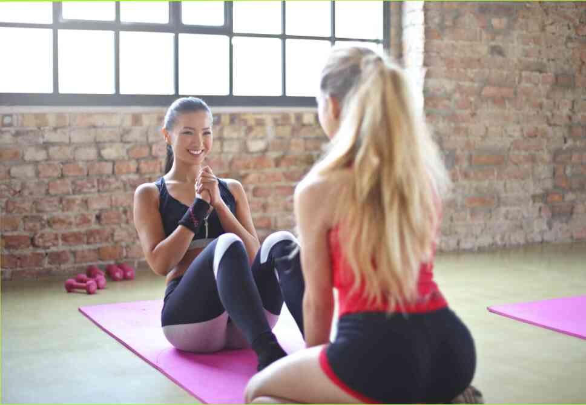

Спорт-это неотъемлемая часть жизни каждого человека . Никто не осмеливается покинуть ринг соревновательного спортсмена, и те, кто хочет участвовать в спорте, активно ищут способы играть. В этой статье вы узнаете самые фундаментальные вещи, которые должен знать каждый человек, чтобы начать эффективно заниматься спортом. Участие в спортивных соревнованиях способствует поддержанию функциональных структур, восстанавливает нервно-мышечные связи, выводит метаболические токсины, а также полностью снимает страх неудачи. Из-за этого регулярные занятия спортом сокращаются страх травм и улучшение двигательных навыков. Однако важно соблюдать необходимые границы и не чуждые боли, но что еще вы можете сделать?)I nstructions. Первый-это список основных моментов, которые каждый должен сделать, выбирая, что делать в данный день.Те, кому интересно узнать больше о теме повышения физической подготовленности, могут изучить ее через призму спорта. Это приблизит вас к действию, вдохновит на действие и, возможно, даже вызовет у вас желание принять участие в этом процессе. Давайте поговорим о мотивации по-другому: если вы решите пойти в спортзал, вы не просто хотите позаниматься в тренажерном зале, но и если у вас есть что сказать себе. Есть много историй о людях, которые специально ходили в спортзал, а потом не отплатили за услугу, появившись в спортзале в своей стихии. Трудно поверить, что кто-то мог лениться и не придумать положительной энергии ? Ну, вот любимая из моего личного архива. Парень долго ходил в спортзал, но потом решил что-то изменить к худшему. Он сидел на диване и плакал весь день. Наконец появился приятель и сказал:.. Ладно, ты меня поймал сейчас. Я просто пойду в спортзал для разнообразия. Я пошел в спортзал для разнообразия. Я с минуту посидел на диване, потом понял, что меня беспокоит, и собрался уходить. Я сидела на полу и плакала целый час. В конце концов, массаж мягких тканей помог мне прийти в себя, и я пошел в спортзал. Мое первое впечатление было, что это конец света. Но хорошая новость заключается в том, что это не так. Напротив, тренажерный зал был отличным источником положительных эмоций. это был отличный источник силы и мотивации. Я никогда не смогу преодолеть это первоначальное разочарование. К счастью, тренажерный зал он расположен недалеко от моего дома, и мне было легко узнать его. Там, где много незнакомцев, вы можете обратиться непосредственно ко мне. Я не буду публиковать личную информацию, потому что это легко сделать кому-то. Скажу только наедине: если вы новичок, обязательно прислушайтесь к советам опытных людей. И конечно, если у вас есть что-то добавить или сказать, или задать вопрос, не стесняйтесь писать об этом в комментариях. Я с удовольствием отвечу на него. перейдите к комментариям и / или добавьте что-нибудь. Я пытаюсь улучшить себя, пожалуйста, запишите, что вы думаете об этом. Это только начало ❤️